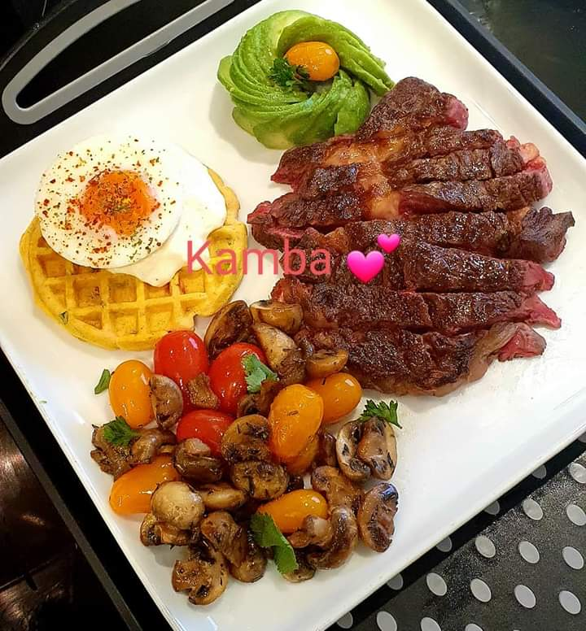

Deep Dish Brownies

Recipe by: Biz McMahon
| Related Recipes |
Chewiest Brownies |
| Can't tell if they are Low-fat Brownies |
Bodacious Brownie |
| Katrina's Best-Ever Chocolate Brownies |
Easy Fudge Brownies |
Preparation time: 60 minutes
Servings: Nine(9)
Ingredients
- 3/4 cup butter, melted
- 1 1/2 teaspoons vanilla extract
- 3 eggs
- 3/4 cup all-purpose flour
- 1/2 cup unsweetened cocoa powder
- 1/2 teaspoon baking powder
- 1/2 teaspoon salt
Directions
- Preheat oven to 350 degrees F (175 degrees C) and Grease an 8 inch square pan.
- In a large bowl, blend melted butter, sugar and vanilla
- Beat in eggs one at a time.
- Combine the flour, cocoa, baking powder and salt. Gradually blend into the egg mixture.
- Spread the batter into the prepared pan.
- Bake in preheated oven for 40 to 45 minutes, or until brownies begin to pull away
from the sides of the pan
- Let brownies cool off, then cut into squares. Enjoy!
TIP
Aluminium foil can be used to keep food moist, cook
evenly and make make clean up easier
Nutritional value
340 cals